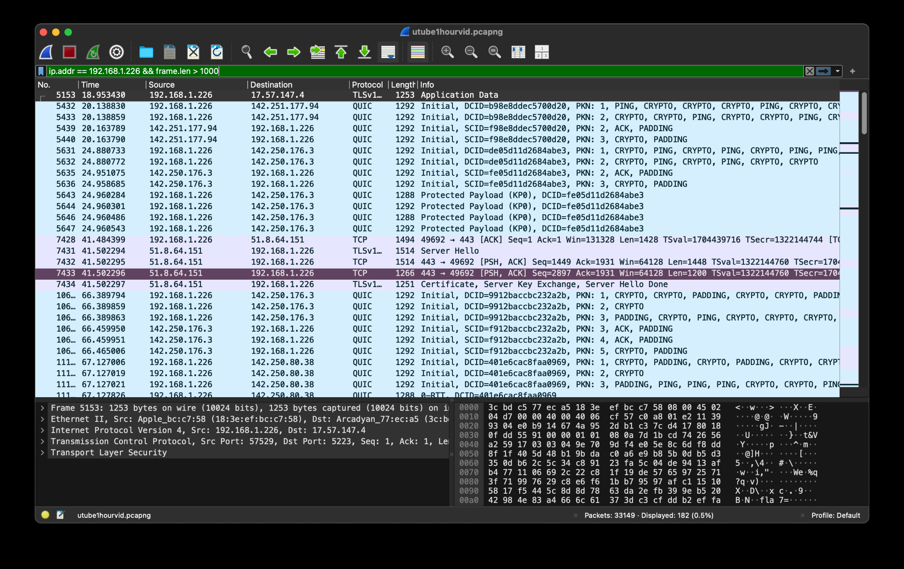
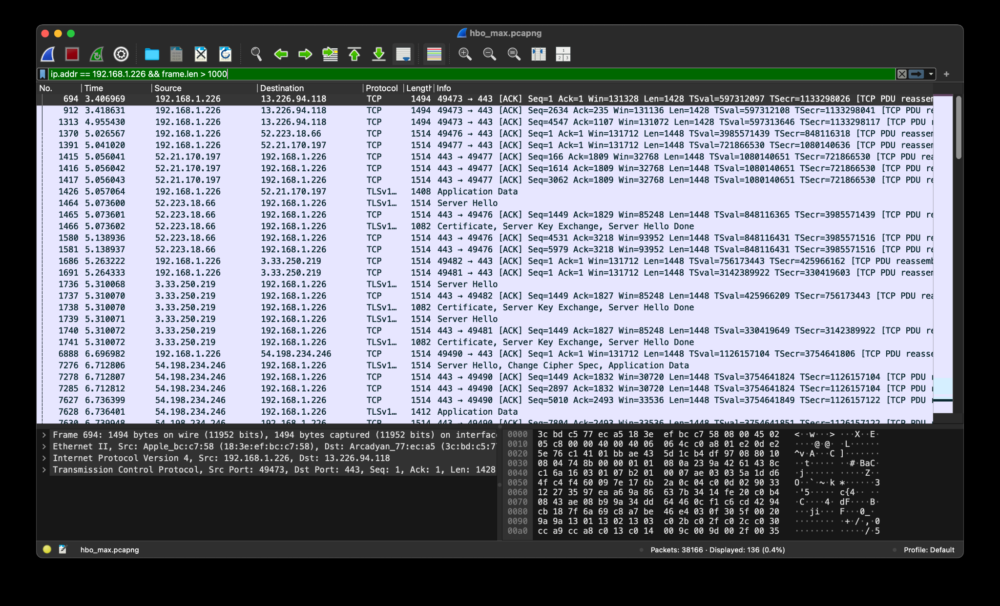
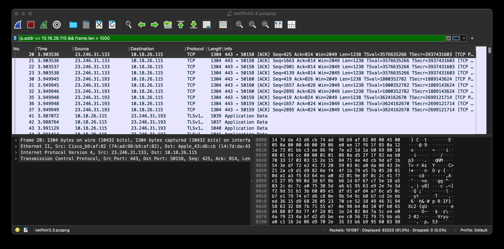
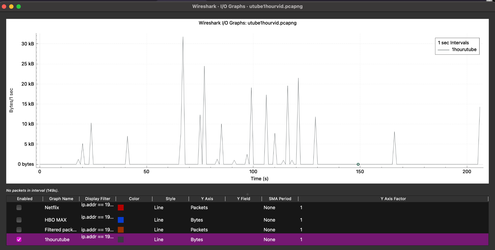
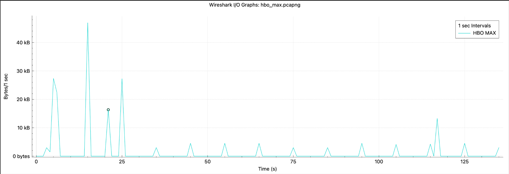

NETWORK ANALYSIS
Network Traffic Analysis.
A network analysis project using Wireshark to examine and compare the network behavior of YouTube, Netflix, and HBO Max during video streaming.
Project Overview
This project analyzed how major streaming platforms handle network traffic during video playback. Wireshark was used to capture and examine traffic from YouTube, Netflix, and HBO Max.
Project Objective
The goal was to understand how different streaming platforms transfer video data and how their networking approaches affect bandwidth usage, latency, buffering, and overall traffic behavior.
Technologies
Methodology
Network traffic was captured while streaming content from YouTube, Netflix, and HBO Max. The captures were then examined in Wireshark to identify protocols, packet behavior, data transfer patterns, and latency.
Packet Analysis
Packet counts and traffic volumes were compared across each streaming platform. YouTube generated approximately 50,000 packets, while Netflix and HBO Max generated approximately 10,000 and 9,000 packets respectively.
Protocol Analysis
YouTube primarily used QUIC over UDP, while Netflix and HBO Max primarily used TCP. All three platforms used TLS 1.3 to protect streaming traffic.
Latency
YouTube demonstrated the lowest observed latency, approximately 0.1–0.3 seconds. Netflix and HBO Max showed approximately 0.5–1.0 seconds during the testing.
Traffic Behavior
The analysis showed different traffic patterns between platforms. YouTube produced smaller, frequent bursts, while Netflix and HBO Max used larger bursts associated with pre-buffering and larger video chunks.
Adaptive Streaming
YouTube and Netflix used DASH for adaptive streaming, while HBO Max used HLS. These approaches allow streaming services to dynamically deliver video content based on network conditions.
Encryption & Privacy
All three platforms used TLS 1.3 encryption. The analysis focused on observable protocol information and traffic behavior without attempting to decrypt the protected video payloads.
Results
The analysis showed that streaming platforms use different transport and data delivery strategies. YouTube emphasized low latency and frequent smaller transfers, while Netflix and HBO Max relied more heavily on larger data transfers.
What I Learned
This project strengthened my understanding of packet analysis, TCP and UDP traffic, QUIC, TLS 1.3, adaptive streaming, bandwidth usage, latency, and using Wireshark to investigate real-world network behavior.
PROJECT VISUALS
Wireshark Network Analysis
Actual Wireshark captures and traffic visualizations from the streaming analysis project.

YouTube — QUIC Traffic
Wireshark capture showing YouTube traffic primarily using the QUIC protocol.

HBO Max — TCP Traffic
Wireshark capture showing HBO Max traffic using TCP and TLS 1.3.

Netflix — TCP Traffic
Wireshark capture showing Netflix traffic using TCP and TLS 1.3.

YouTube Traffic Volume
Wireshark traffic visualization showing data transferred over time.

HBO Max Traffic Volume
Traffic visualization showing the pattern of data transferred during streaming.
Interested in my work?
Check out my other projects or get in touch with me.